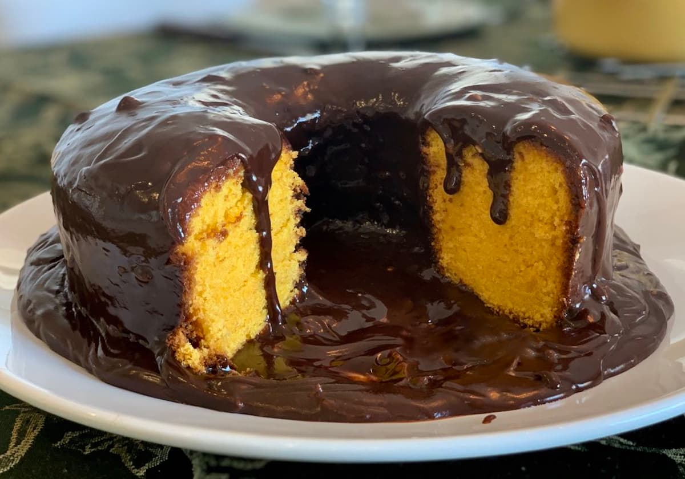

Receita 1 - Bolo de cenoura com cobertura de chocolate
Minha opinião
Com quem eu provaria esse prato?
Uma rapaz nordestino de origens humildes e que com certeza já comeu muitos bolos de cenouras em sua infância. Comer essa receita com ele desencadearia um bom papo nostálgico
Receita
Ingredientes
- 4 ovos
- 4 colheres (sopa) de chocolate em pó
- 2 colheres (sopa) de manteiga
- 3 xícaras (chá) de farinha de trigo
- 2 xícaras (chá) de açúcar
- 2 colheres (sopa) de fermento
- 1 xícara (chá) de leite
- 2 colheres (sopa) de manteiga
- 7 colheres (sopa) de chocolate em pó
- 2 latas de creme de leite com soro
- 3 colheres (sopa) de açúcar
Modo de preparo
Passo 1 - Em um liquidificador adicione os ovos, o chocolate em pó, a manteiga, a farinha de trigo, o açúcar e o leite, depois bata por 5 minutos.
Passo 2 - Adicione o fermento e misture com uma espátula delicadamente.
Passo 3 - Em uma forma untada, despeje a massa e asse em forno médio (180 ºC) preaquecido por cerca de 40 minutos. Não se esqueça de usar uma forma alta para essa receita: como leva duas colheres de fermento, ela cresce bastante! Outra solução pode ser colocar apenas uma colher de fermento e manter a sua receita em uma forma pequena.
Passo 4 - Em uma panela, aqueça a manteiga e misture o chocolate em pó até que esteja homogêneo.
Passo 5 - Acrescente o creme de leite e misture bem até obter uma consistência cremosa.
Passo 6 - Desligue o fogo e acrescente o açúcar